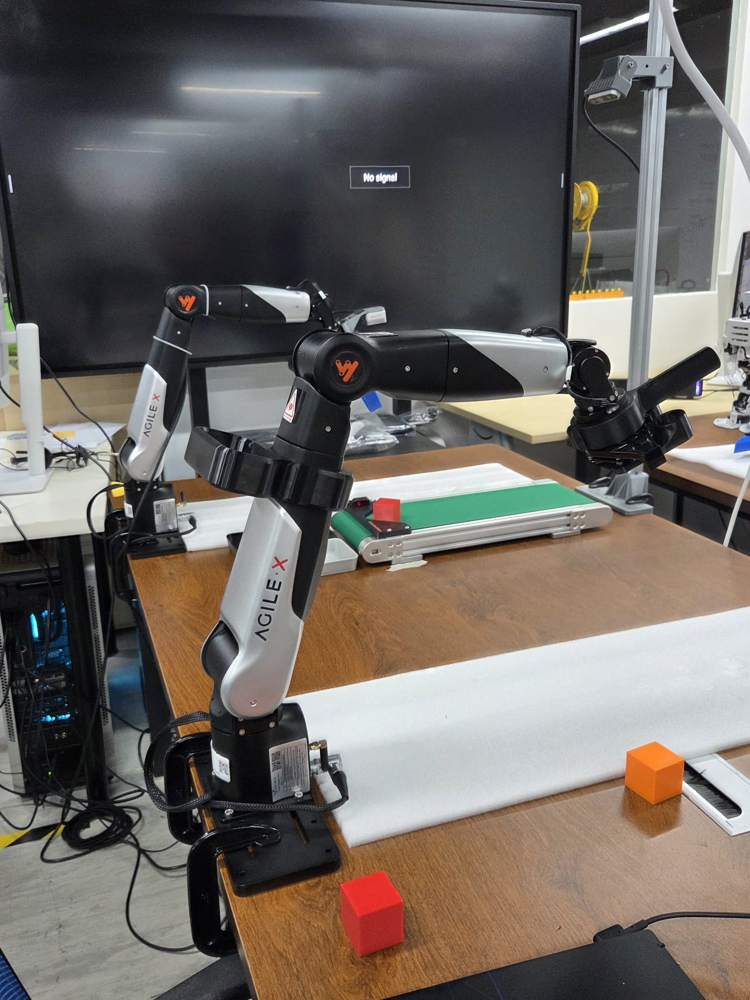
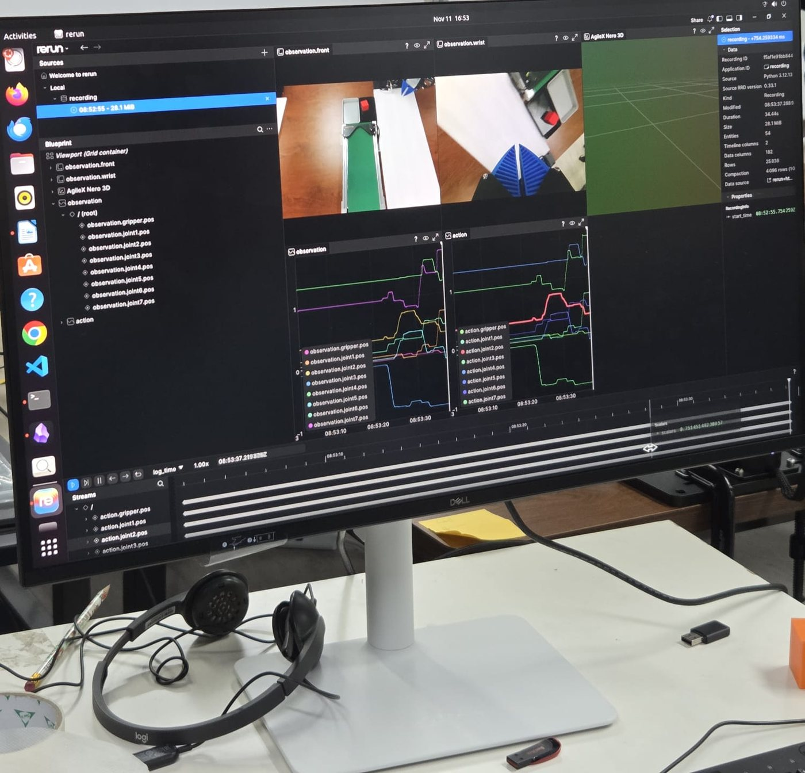
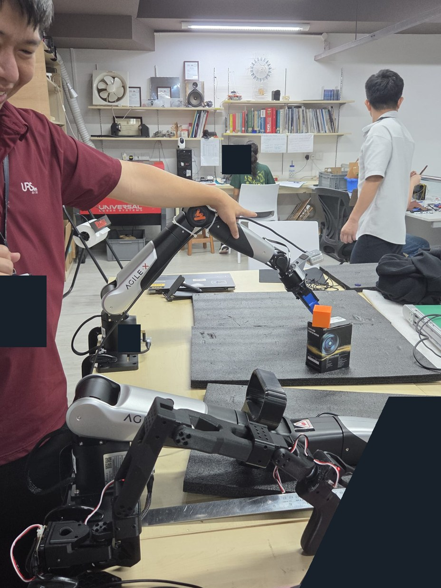
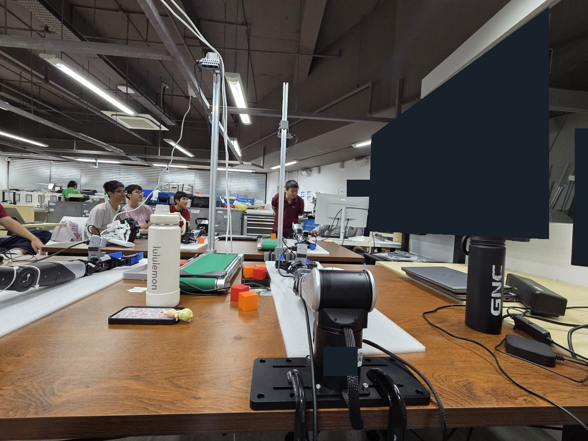

Research plan
The working plan from our initial list. These are planned steps, not completed work.
Step 1
Dataset auditing
Watch every recorded episode, flag failures and out-of-distribution moments, and keep a manifest of what each episode contains. Decide acceptance criteria before collecting more.
Step 2
Trajectory cleaning & smoothing
Remove jitter and teleoperation noise from joint trajectories (for example low-pass filtering), fix timestamps and dropped frames so the policy learns smooth motion.
Step 3
Cleaning & purging data
Delete corrupted or failed episodes, deduplicate near-identical segments, and rebalance the dataset so the policy doesn't overfit one behaviour.
Step 4
Camera: RGB vs RGB‑D
Benchmark both. Start RGB-only (matching ACT/ALOHA[2]); add depth if tasks need geometry that colour alone can't give, weighing the extra calibration and sync work.
In the lab


Latest milestone
The first end-to-end test of the pipeline is done: an ACT policy trained on the curated dataset performed a trained pick-and-place run on the real arm. See What we learnt, Days 4-6.
Working proposal
The original five-stage plan and mathematical notation are preserved without rewriting in What we learnt.[8]
In the lab
Two photos and a short clip. Captions describe what is visible, not a measured success rate. Screen content and incidental identifiers are covered; the published clip has no audio.


Proposed pipeline
Proposed overall pipeline
Our planned end-to-end pipeline, from collecting demonstrations to deploying and retraining. This is the proposed design: not every stage is implemented yet.
1Data Collection
2Data Preprocessing
3Model Training
4Model Validation
No: back to preprocessing
5Deployment
6Real-Time Inference
7Feedback & Retraining
Both paths loop back to data collection